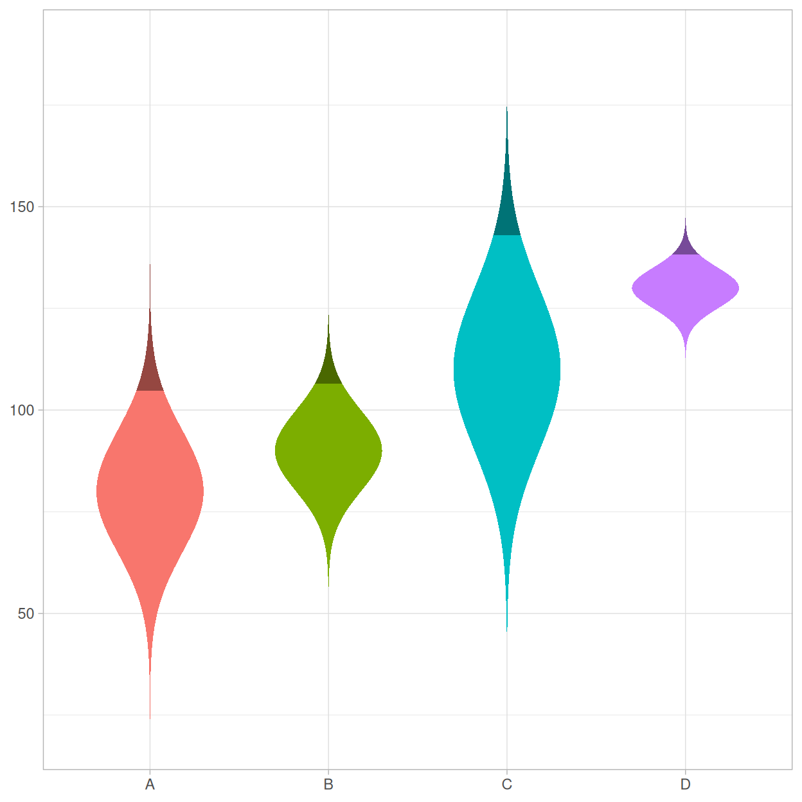
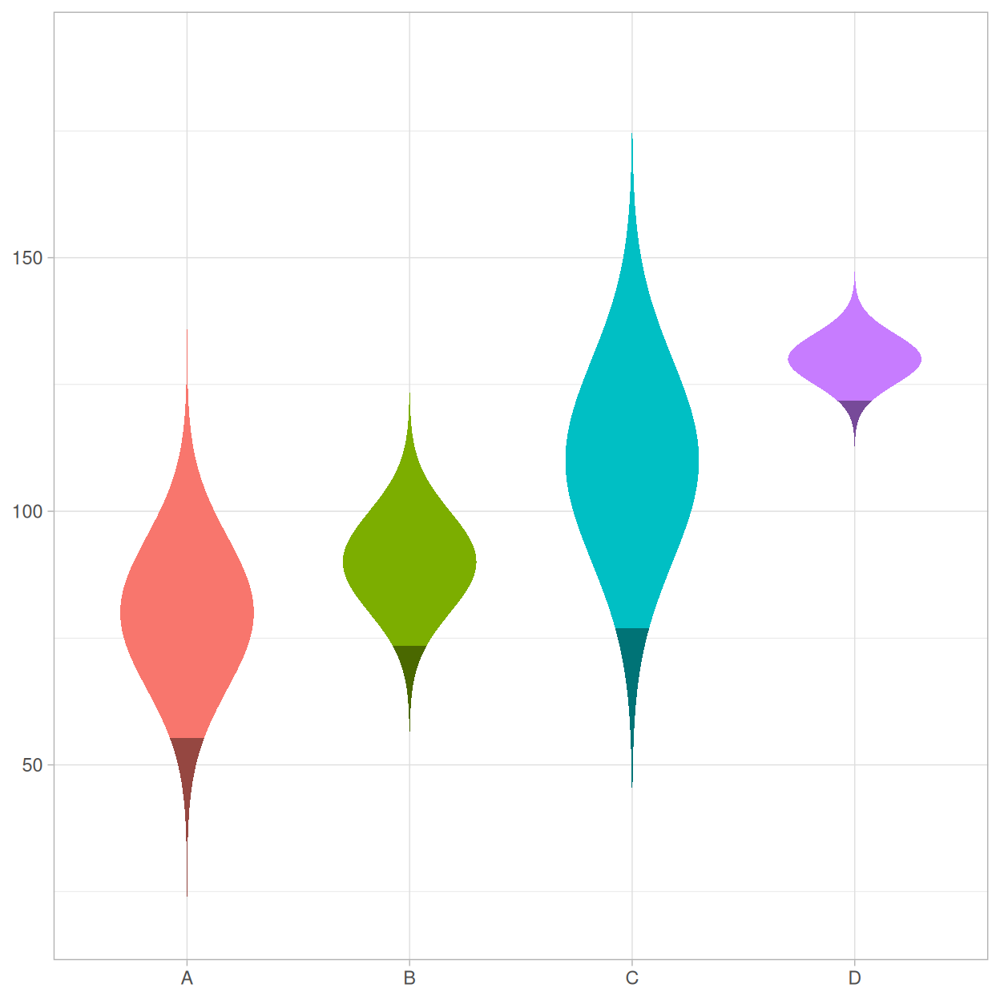
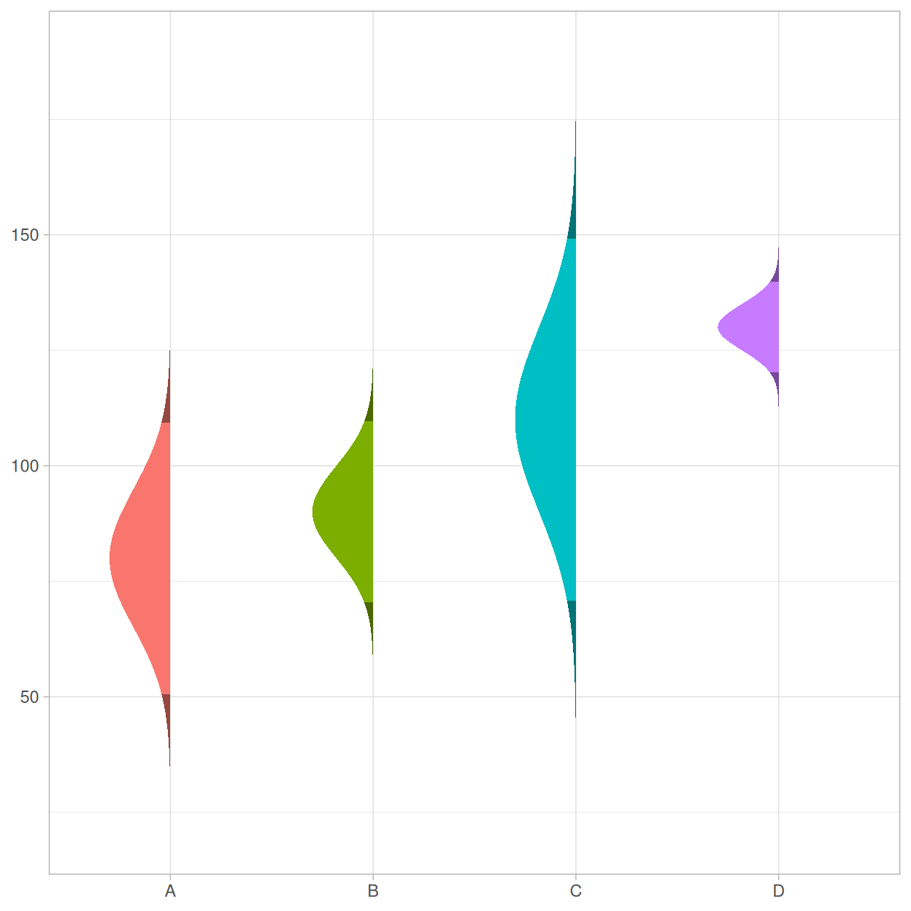
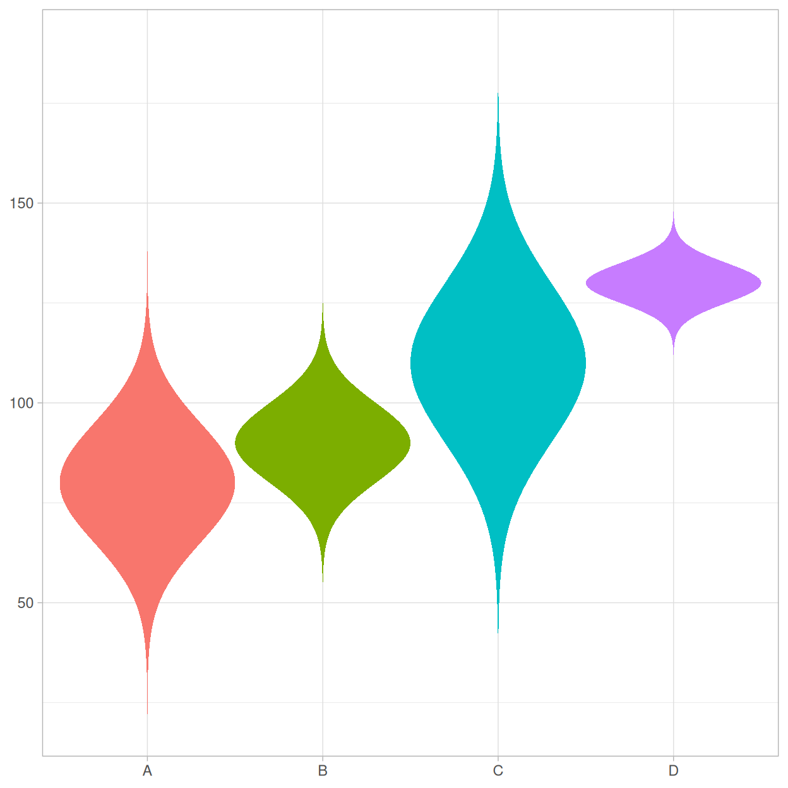
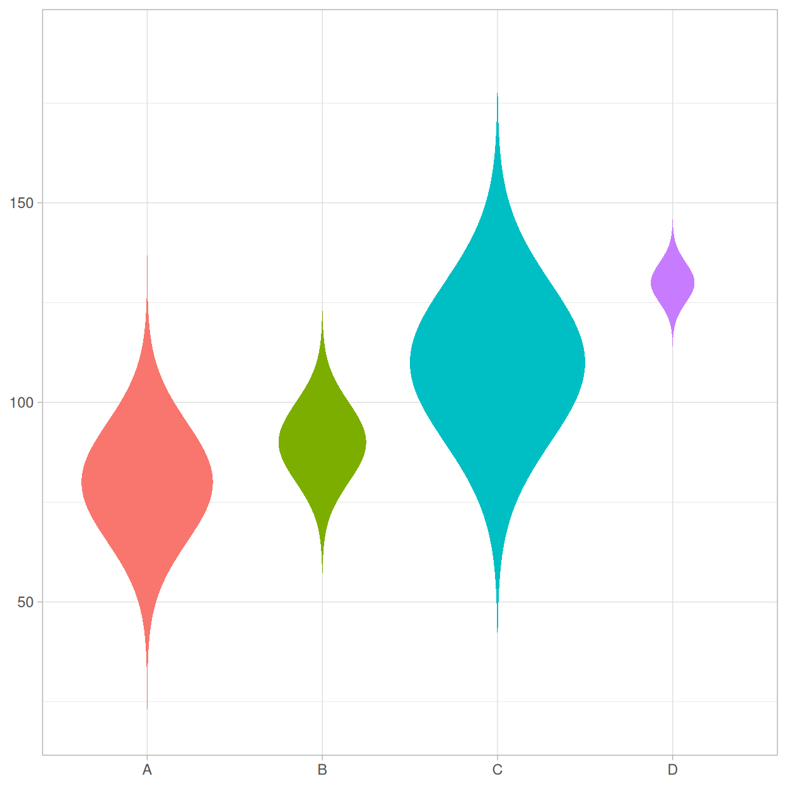
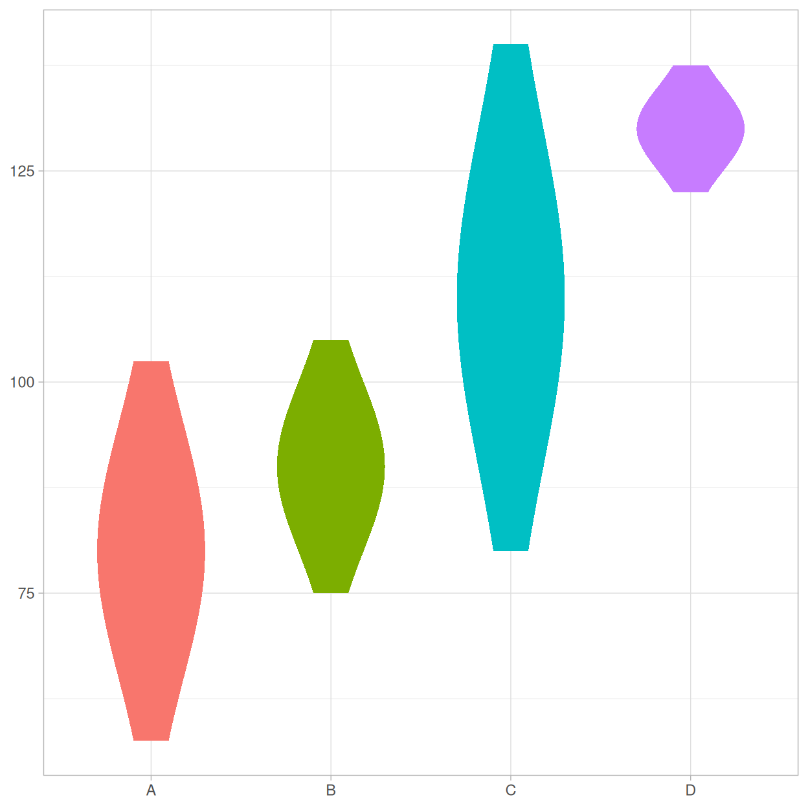
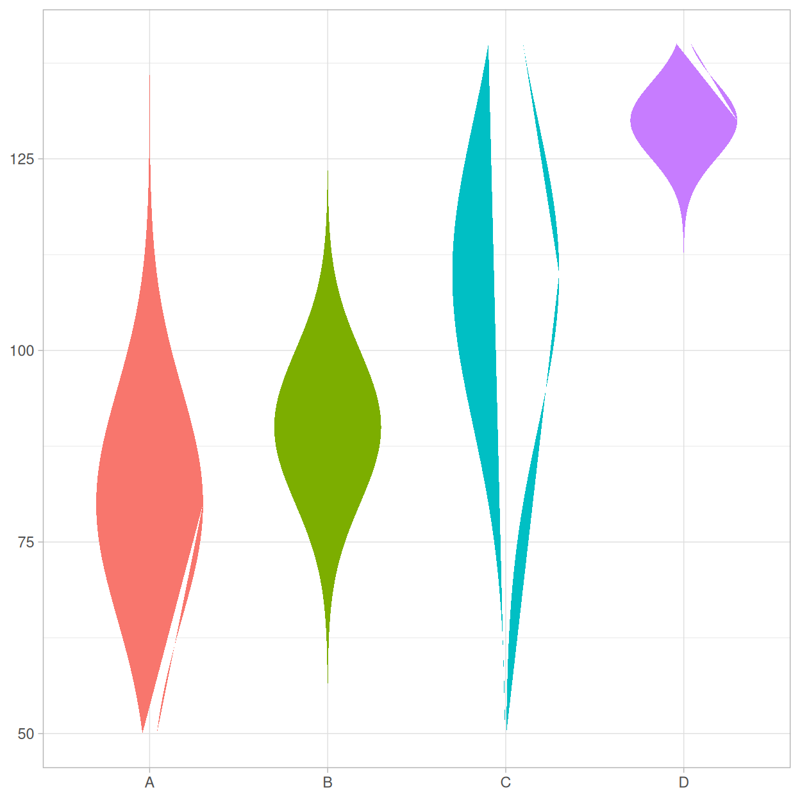
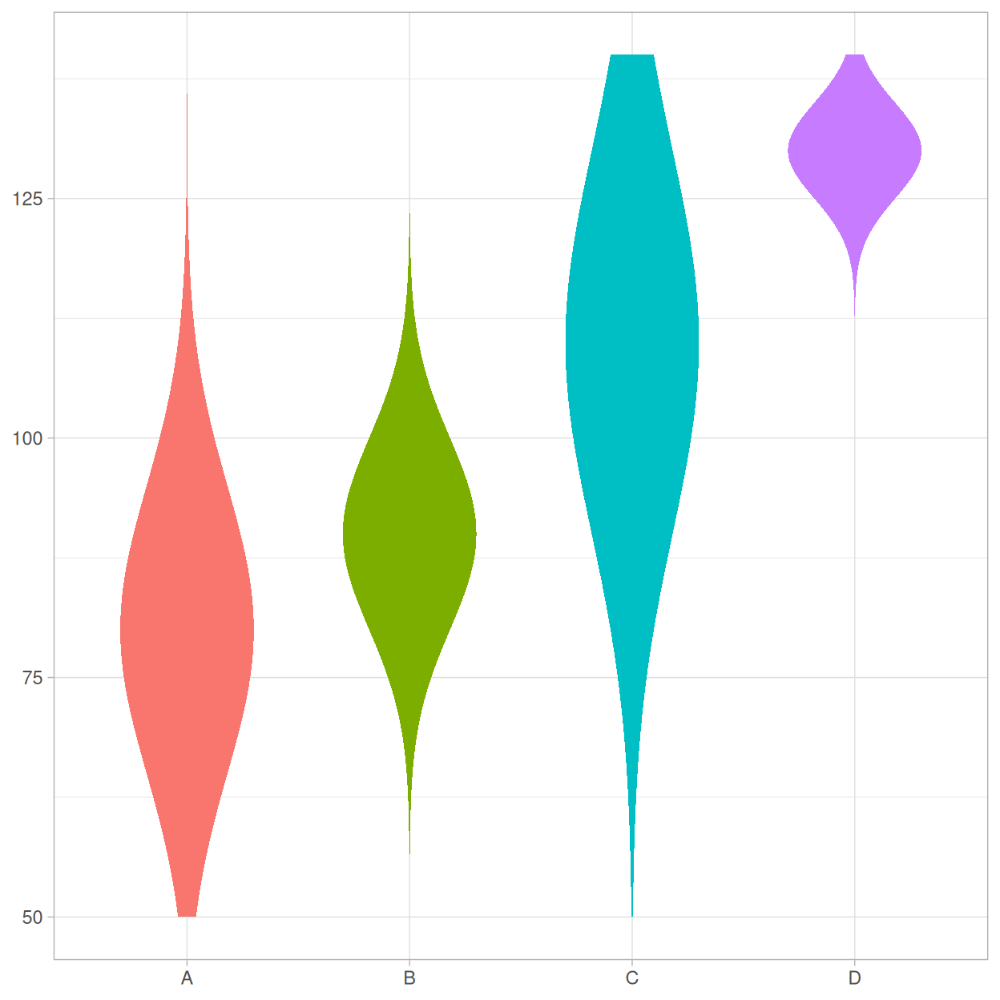
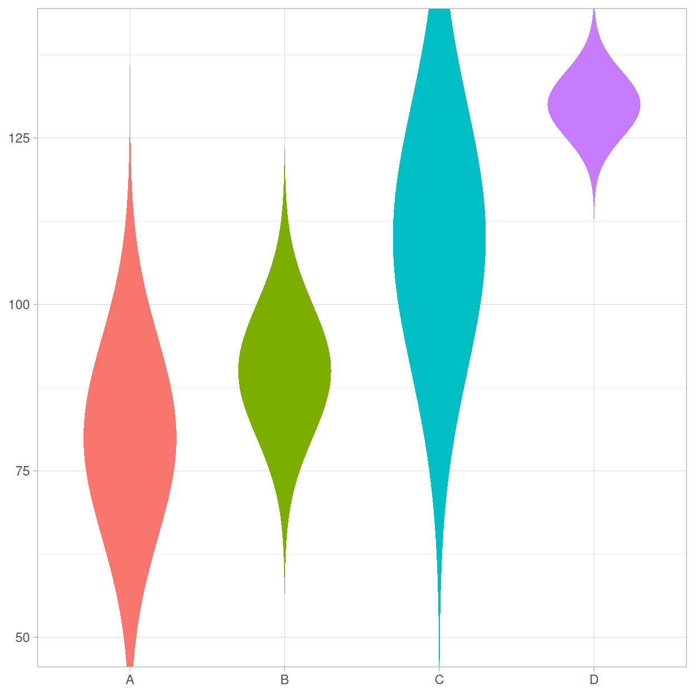

library(ggplot2)
library(ggnormalviolin)
# Make data
d <- data.frame(
dist = c("A", "B", "C", "D"),
dist_mean = c(80, 90, 110, 130),
dist_sd = c(15, 10, 20, 5)
)
# Make base plot
p <- ggplot(data = d,
aes(x = dist,
mu = dist_mean,
sigma = dist_sd,
fill = dist)) +
theme_light() +
theme(legend.position = "none") +
labs(x = NULL, y = NULL)
# Add normal violins
p + geom_normalviolin()Suppose there are 4 hypothetically normal distributions with specific means and standard deviations. They can be plotted like so:
Tail Highlighting
Suppose you want to highlight the two tails of the distributions. Set the p_tails to specify the total area of the tails. Thus, if p_tail = 0.05, each tail will represent the outermost 2.5% of the distributions (i.e, 0.05 = 2 &mult; 0.025).
p + geom_normalviolin(p_tail = 0.05)Suppose you want to highly only the upper tails. Set p_upper_tail to the proportion desired.
p + geom_normalviolin(p_upper_tail = 0.05)

Analogously, you can highlight only the lower tails by setting the p_lower_tail parameter.
p + geom_normalviolin(p_lower_tail = 0.05)

The defaults for highlighting is accomplished by selecting a subset of the whole distribution, setting tail_fill to black, and then making the black fill transparent by setting tail_alpha = 0.4. Setting these values to other colors and levels of transparency can dramatically change the look of the plot.
p +
geom_normalviolin(
p_tail = 0.05,
tail_fill = "white",
tail_alpha = 0.8,
color = "gray20",
linewidth = 0.1
)Direction of Violin
If you want to omit the left or right side of the violins, you can set the face_left or face_right parameters to FALSE.
p + geom_normalviolin(face_right = FALSE, p_tail = 0.05)

Violin Width
You can set the width of the violin to any size desired.
p + geom_normalviolin(width = 1)

If you want the shape of the distribution to remain constant, map the width parameter to a multiple of the standard deviation.
p + geom_normalviolin(aes(width = dist_sd * 0.05))

Setting Limits
By default, the normal violins extend 4 standard deviations in both directions. Use the nsigma parameter to set a different value.
p + geom_normalviolin(nsigma = 1.5)

If you set limits on the y scale, it is possible that some of the violins will be distorted or cut in pieces.
p +
geom_normalviolin() +
ylim(50, 140)

This occurs because data outside the limits is discarded, breaking up the polygons that compose the violins into smaller pieces. To prevent such behavior, set the upper_limit and lower_limit parameters equal to the same limits you have specified for the y scale (or any other values you wish).
p +
geom_normalviolin(lower_limit = 50, upper_limit = 140) +
ylim(50, 140)

Alternately, you can set the limits in ggplot2::coord_cartesian (or any of the coord_* functions), which will zoom the plot instead of discarding the data.
p +
geom_normalviolin() +
coord_cartesian(ylim = c(50, 140))

coord_* function